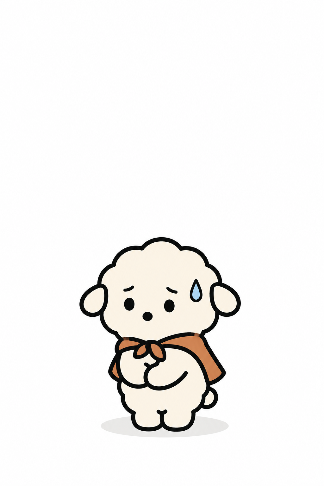
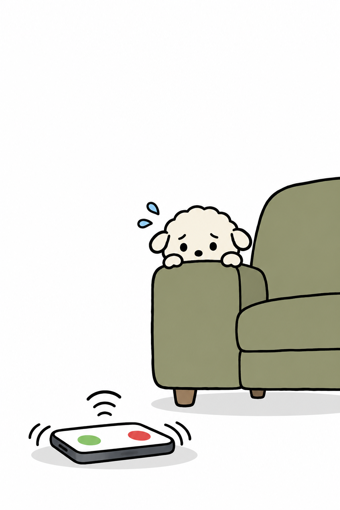
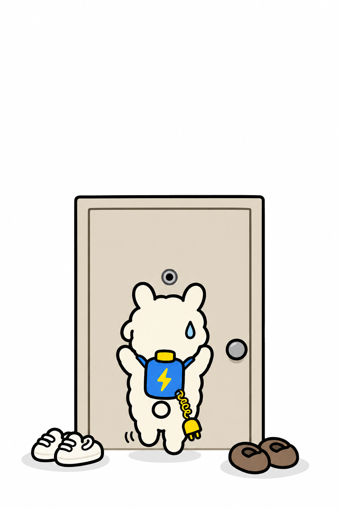
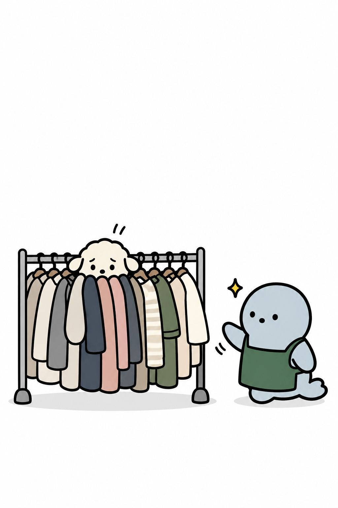
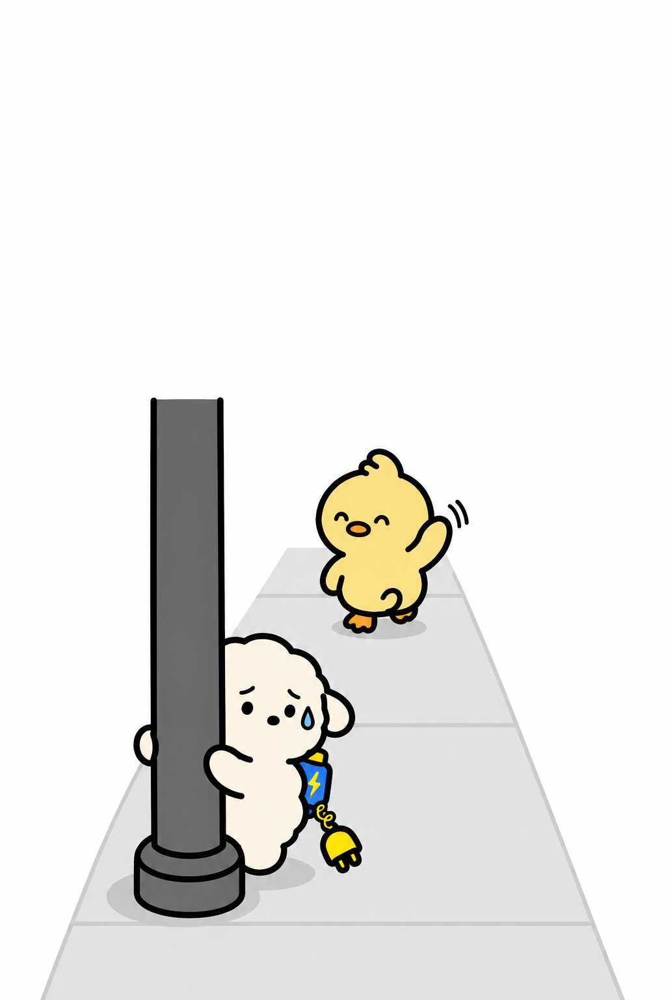
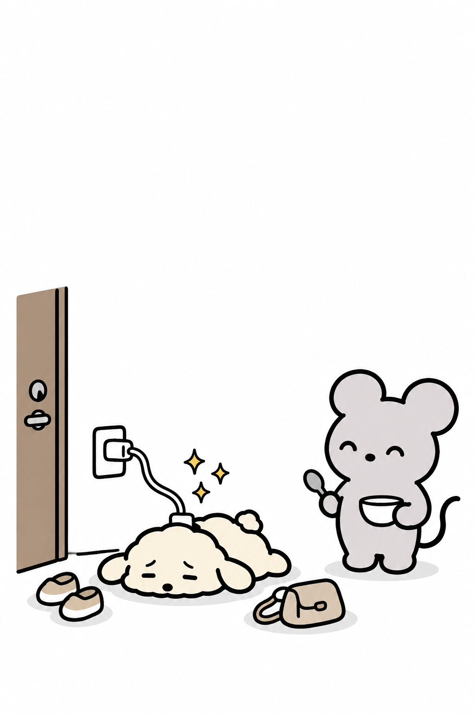

- 작은 힘에도 작은 책임은 따른다 -
집에서만
충전되는
초능력자 특징

1.전화는 죽어도 안 받고
끊어지면 톡으로 답함
무슨 일이지…
무슨 일이지…

2.배달 기사님 엘리베이터 타실 때까지
숨어서 훔쳐 봄
갔나…

3.옷 고를 때 말 걸면
옷 사이로 숨음
찾으시는 거 있으세요?
없어요 없어요

4.집 방향 같은데 다른 척하고
갈 때까지 기다림
두부야, 낼 봐~
먼저 가 제발

5.약속 끝나고 집에 오면
현관에서 쓰러짐
누나 밥은?
충전 끝나면
♥ 당신 곁의 두부를 태그해 주세요 ♥